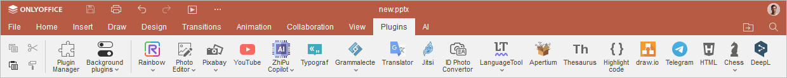
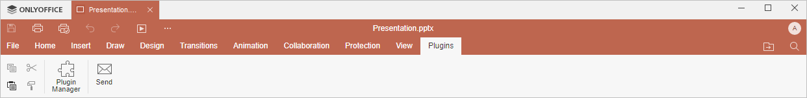

Kartica Dodaci
Kartica Dodaci u Presentation Editor-u omogućava pristup naprednim funkcijama uređivanja korišćenjem dostupnih dodataka trećih strana.
Odgovarajući prozor Online Presentation Editor-a:

Odgovarajući prozor Desktop Presentation Editor-a:

Dugme Menadžer dodataka omogućava otvaranje prozora u kojem možete pregledati i upravljati svim instaliranim dodacima, kao i dodavati sopstvene dodatke.
Dugme Pozadinski dodaci omogućava prikaz liste dodataka koji rade u pozadini. Ovde ih možete aktivirati ili deaktivirati uključivanjem/isključivanjem odgovarajućih prekidača, kao i prilagoditi njihova podešavanja klikom na dugme Više pored željenog dodatka.
Počev od ONLYOFFICE Docs verzije 8.2, nijedan dodatak ne dolazi unapred instaliran uz editore. Dodaci se instaliraju putem Menadžera dodataka.
Trenutno su dostupni sledeći dodaci:
- Pošalji omogućava slanje prezentacije putem e-pošte korišćenjem podrazumevanog desktop klijenta za e-poštu (dostupno samo u desktop verziji),
- Isticanje koda omogućava isticanje sintakse koda izborom odgovarajućeg jezika, stila, boje pozadine itd.,
- Foto editor omogućava uređivanje slika: isecanje, okretanje, rotiranje, crtanje linija i oblika, dodavanje ikona i teksta, učitavanje maske i primenu filtera kao što su Crno-belo, Inverzija, Sepija, Zamućenje, Izoštravanje, Reljef i dr.,
- Tezaurus omogućava pronalaženje sinonima i antonima za izabranu reč i njenu zamenu izabranom,
-
Prevodilac omogućava prevođenje izabranog teksta na druge jezike,
Napomena: ovaj dodatak ne funkcioniše u Internet Explorer-u.
- YouTube omogućava ugrađivanje YouTube video-zapisa u prezentaciju.
Više vizuelnih dodataka može biti dodato u dokument. Dodati dodaci biće prikazani kao odgovarajuće ikone na levom panelu.
Da biste saznali više o dodacima, pogledajte našu API dokumentaciju. Svi postojeći primeri dodataka otvorenog koda dostupni su na GitHub-u.